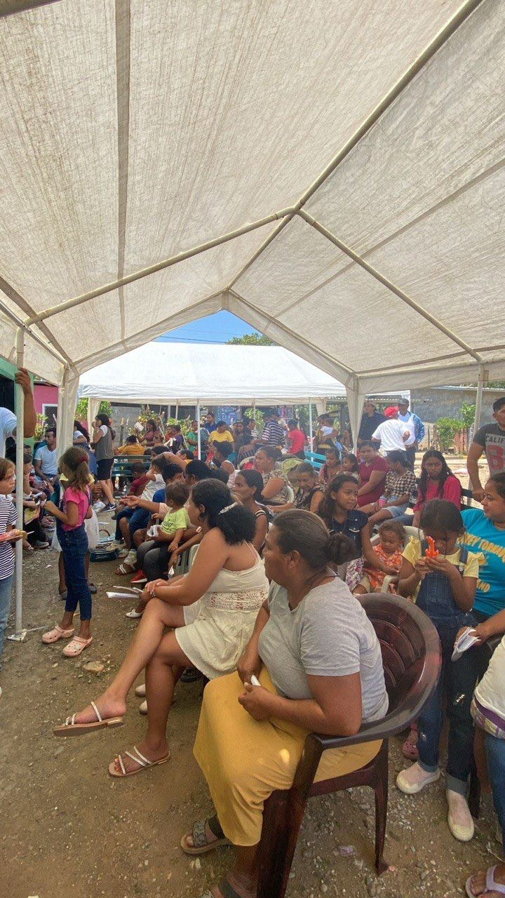
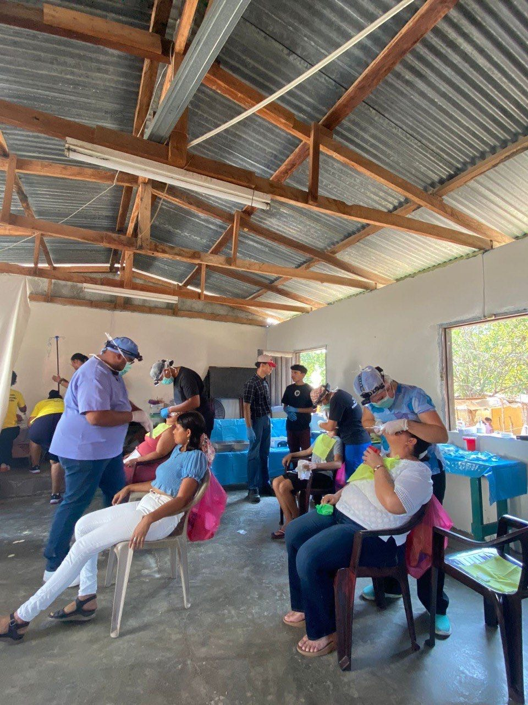
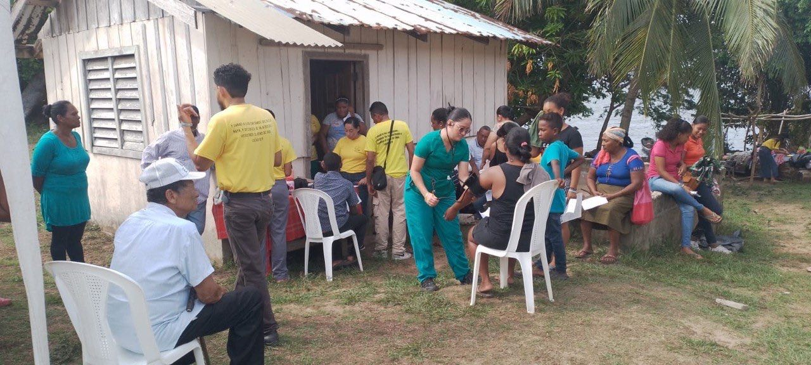
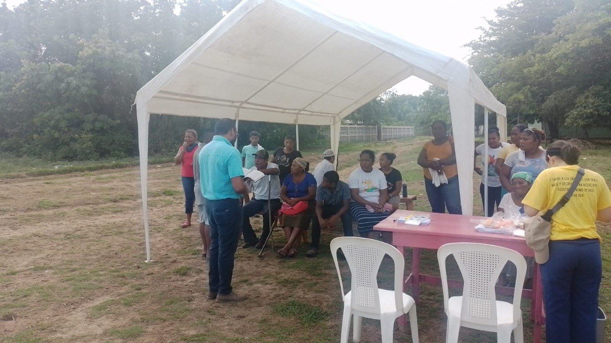
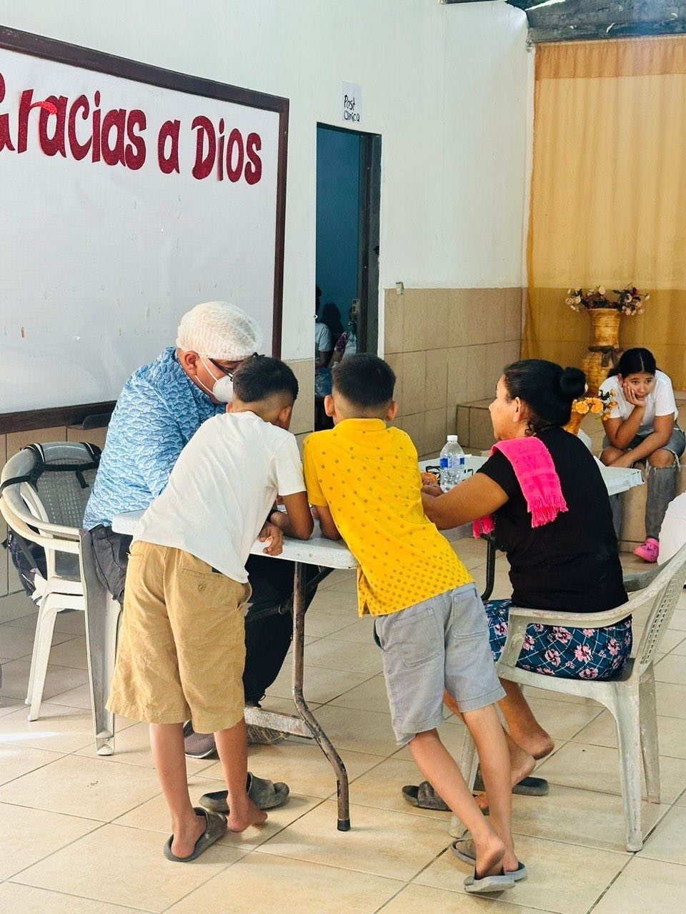
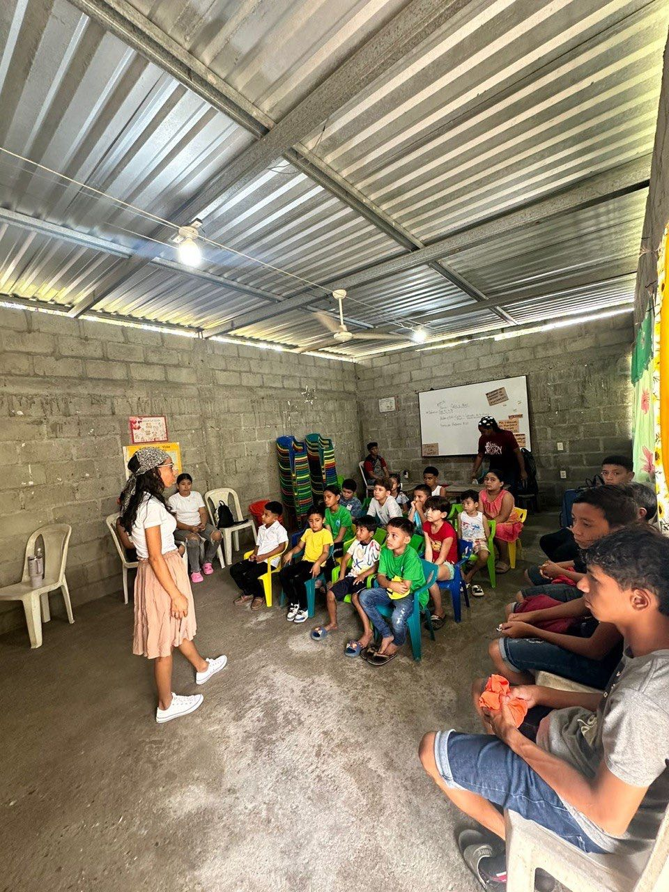
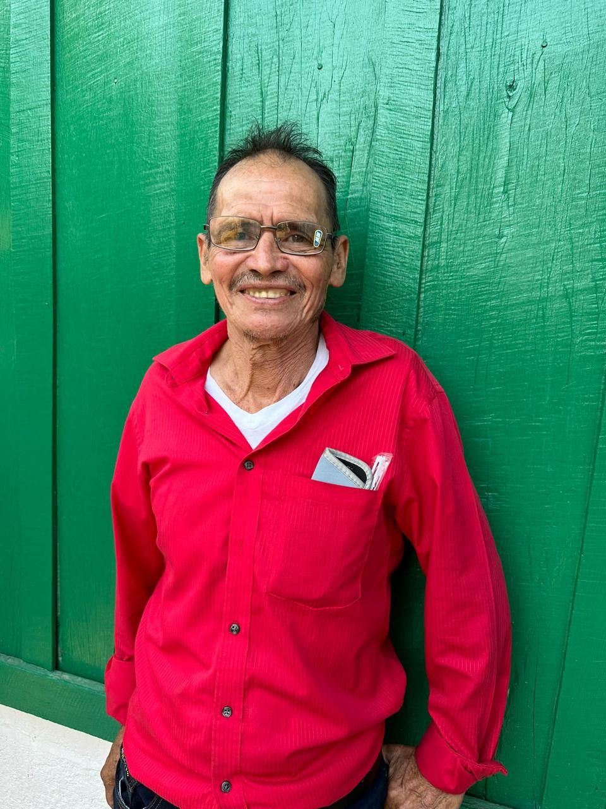
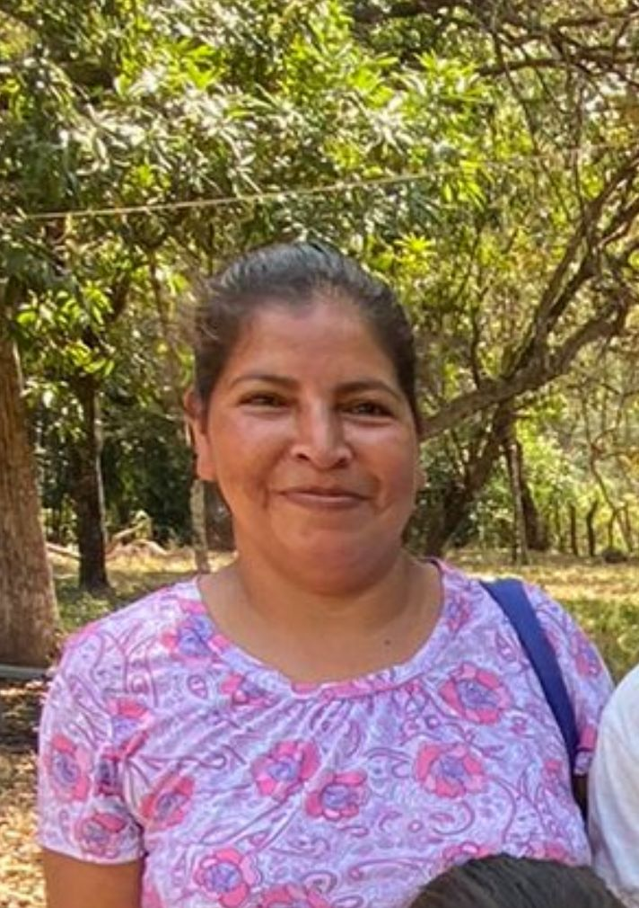

Descubre el impacto que nuestras brigadas médico-odontológicas tienen en comunidades que lo necesitan
2,000+
200+
15+
Extracciones, limpiezas dentales y tratamientos para restaurar la salud bucal de nuestros pacientes.
Consultas generales, chequeos y tratamientos para enfermedades comunes en todas las edades.
Educamos a las comunidades en higiene, nutrición y prevención de enfermedades para una salud duradera.
Entregamos medicamentos e insumos médicos a hospitales públicos y asilos de ancianos.






"Por años no podía ver bien para leerle a mis nietos. Los anteojos que recibí en la brigada cambiaron todo. Es algo pequeño que hizo una diferencia enorme en mi vida."

Beneficiario, Palma Real, Omoa
"Mi hijo llevaba semanas con dolor de muelas y no teníamos cómo pagar un dentista. Gracias a Dibujando Sonrisas, pudo ser atendido con mucho amor y cariño."

Beneficiaria, Agua Zarca, Santa Bárbara